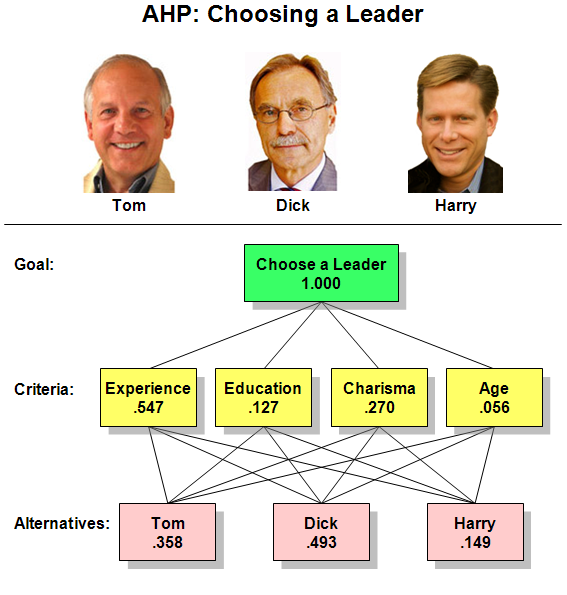
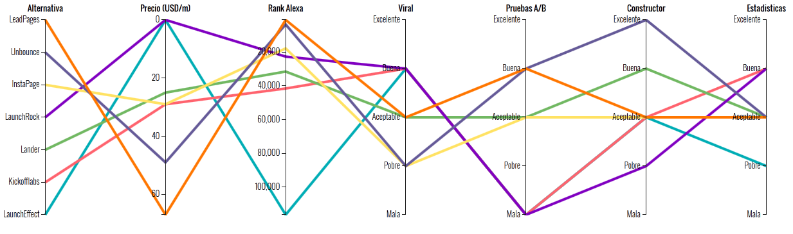

<!DOCTYPE html><html><head><meta charset="utf-8"><meta name="viewport" content="width=device-width, initial-scale=1, maximum-scale=1"><title>Analytic Board</title><link rel="stylesheet" type="text/css" href="bower_components/prism/themes/prism-tomorrow.css"><link rel="stylesheet" type="text/css" href="styles/main.css"></head></html><body><article><section class="gray"><div></div><div class="bt-right"></div></section><section class="green"><h1>Jaime Andrés García</h1><h2>CEO Ingenio Sólido - Analytic Board</h2><h2>Magister en Ingeniería Administrativa</h2><h2>Experto en Visualización de Datos y Toma de Decisiones</h2><h2>Correo: jaimegarcia@analyticboard.com</h2><h2>Celular: 300 269 96 53</h2></section><section class="adictos"><div class="tint"><h2>La tecnología se ha vuelto muy importante en nuestra vida y en nuestras organizaciones</h2></div></section><section class="blue"><h1>Constantemente nos enfretamos al reto seleccionar opciones tecnológicas</h1><h2>- Sistema de Gestión Administrativa</h2><h2>- Motor de Base de Datos</h2><h2>- Servidor de Infraestructura</h2><h2>- Un Proveedor Tecnológico</h2><h2>- Solución documental</h2></section><section class="complejo"><div class="tint"><h2>Sin embargo, el proceso se ha vuelto complejo</h2></div></section><section class="white"><h2>Incremento del número de opciones tecnológicas y su complejidad</h2></section><section class="white"><h2>Poca diferenciación entre algunas de las opciones</h2></section><section class="white"><h2>Falta de claridad en las especificaciones</h2></section><section class="white"><h2>La información para la toma de decisiones es imprecisa e insuficiente</h2></section><section class="white"><h2>Las personas que seleccionan la tecnología, lo hacen de forma subjetiva</h2></section><section class="red"><h1>Hay una solución para contrarrestar estos problemas ...</h1></section><section class="white"><h2>El uso de metodologías formales de decisión</h2></section><section class="blue"><h1>Beneficios del uso de metodologías formales de decisión</h1><h2>- Disminución de la subjetividad - Evaluación imparcial</h2><h2>- Manejo de la complejidad</h2><h2>- Hace visibile las imprecisiones e inconsistencias</h2><h2>- Sirve de soporte a la hora de que se realice una auditoría</h2></section><section class="white"><h1>Una de las más populares es la AHP</h1></section><section class="red"><h1>Sin embargo, es difícil de implementar...</h1></section><section class="blue"><h1>Entonces, cuál es la solución</h1></section><section class="white"><h2>Métodos de Decisión + Visualización = Analytic Board</h2></section><section class="red"><h1>Ejemplos en Vivo</h1></section><section class="life"><div class="tint"><h1>Analytic Board</h1><h2>Dele Vida a su Conocimiento</h2><h2>Gracias por su atención</h2></div></section></article><script src="bower_components/bespoke.js/dist/bespoke.min.js"></script><script src="bower_components/bespoke-bullets/dist/bespoke-bullets.min.js"></script><script src="bower_components/bespoke-scale/dist/bespoke-scale.min.js"></script><script src="bower_components/bespoke-hash/dist/bespoke-hash.min.js"></script><script src="bower_components/bespoke-progress/dist/bespoke-progress.min.js"></script><script src="bower_components/bespoke-state/dist/bespoke-state.min.js"></script><script src="bower_components/bespoke-forms/dist/bespoke-forms.min.js"></script><script src="bower_components/prism/prism.js"></script><script src="scripts/main.js"></script></body>